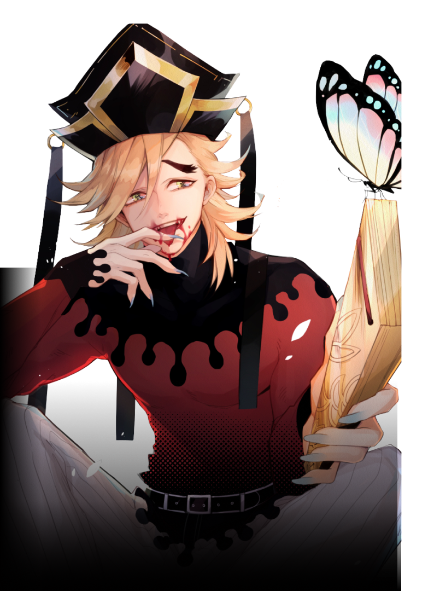
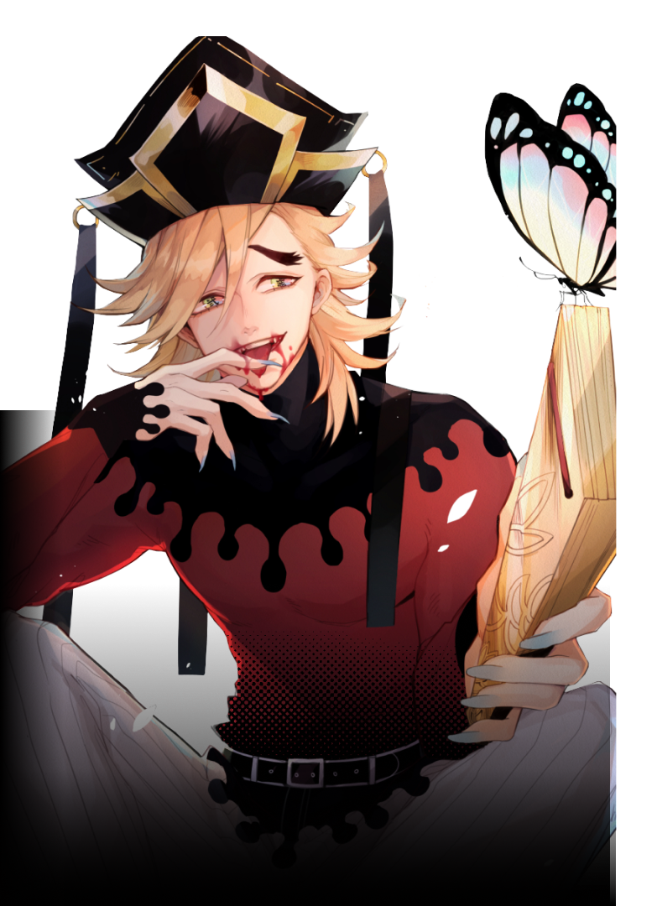

Doma is a major supporting antagonist of Demon Slayer: Kimetsu no Yaiba. He is a demon affiliated with the Twelve Kizuki, holding the position of Upper Rank Two.
Over a century ago, Doma held the position of Upper Rank Six and during that tenure, he turned Gyutaro and Daki into demons and introduced them into the Twelve Kizuki.
He is also the leader of the Eternal Paradise Faith, a cult dedicated to worshipping Doma and a place where he listens to all his followers' troubles and gives them advice. It also acts as a place for Doma to capture and kill humans. This cult also took in Inosuke Hashibira's mother, Kotoha Hashibira, before Doma killed her for finding out that he was eating his followers.
 
